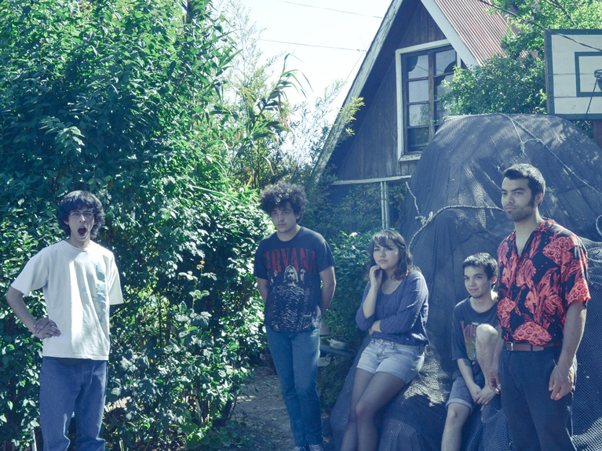

Patio Solar lanza "Pintura"
Primer single de su próximo álbum "Temporada", editado por Piloto.
Pertenecientes a una exageradamente nueva generación de bandas criadas en la clase media del sur de Santiago, Patio Solar se caracteriza por un sonido de pop brumoso y melancólico, que reúne elementos del canto rock latinoamericano y los cubre de una producción neo shoegaze, recordando a noveles bandas inglesas que ellos no conocen (Galaxie 500, Cocteau Twins, Slowdive). Pequeña muestra de lo anterior es su soleado single debut Pintura, que puedes descargar desde http://piloto.club/pintura.
La banda, fue fundada por Claudio Gajardo (también conocido como Claudio del Patio, Claudio Solar y un par de nombres más que preferimos olvidar), hijo del bajista Claudio Banegas, quién integrara reconocidas bandas del under de los años ‘80 y ‘90 como Los Parkinson, Planta Baja o Los Niños Mutantes. A él, se suman Yaney Salgado en guitarra y coros, Camilo Jiménez en bajo, Javier Poduje en batería y Franco Perucca, en teclados.
"Fue una búsqueda de un nombre armonioso, no quería que fuera un significado tan dado como "Los Asesinos". Quería algo como Soda Stereo que para mi es un gran nombre, algo que además funcionara bien fonéticamente", diría el líder de la banda sin que nadie le preguntara.
Tras un disco (Patio Solar) y un EP (Driminsún), que Claudio grabó y liberó con mínimas colaboraciones entre el 2012 y el 2013, la agrupación ya completa se une a Piloto en 2014, dedicando el año entero a grabar lo que será su disco debut "Temporada", de la mano del productor Alex Rojas.
ADJUNTO: FOTO BANDA (PATIO SOLAR)
PILOTO: Sitio Web Facebook Twitter Instagram Soundcloud
✈ comunicaciones@piloto.club ✈ contacto@piloto.club ✈